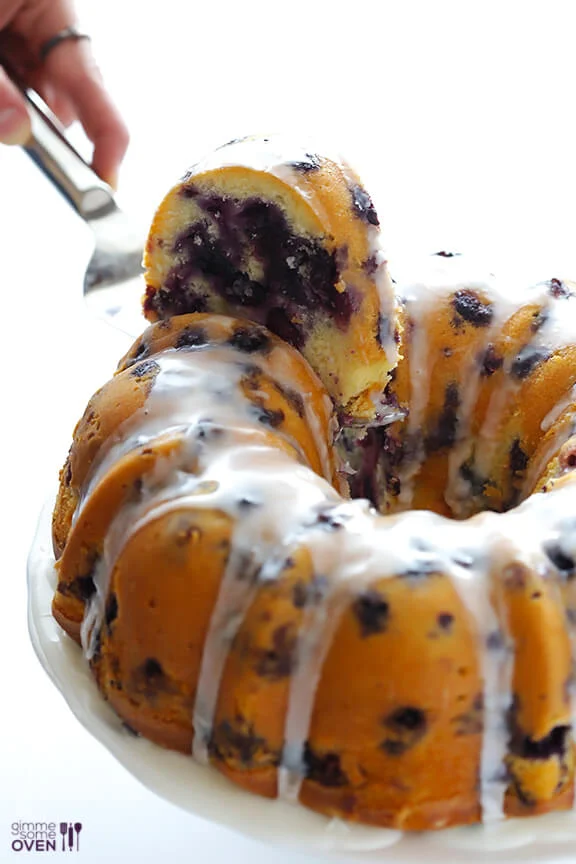

Blueberry Cake

Easy Peasy Blueberry Cake Recipe
This delicious moist blueberry cake recipe is the only one you will ever need in your life.
It can be made with frozen or fresh blueberries for convenience and the secret ingrediant yoghurt makes
it impossible to mess up.
Ingredients
- 2 cups flour
- 2 tsp baking powder
- 1/4 tsp salt
- 1/2 cup sugar
- one egg
- 1 cup plain yoghurt
- 1 cup blueberries
Instructions
- Preheat oven to 375 farenheit
- In one bowl mix together dry ingredients
- In a separate bowl mix together wet ingredients
- Slowly, mixing in-between, incorporate wet ingredients into dry ingredients until a thick batter forms
- Gently fold in blueberries being careful not to overmix
- Grease a medium bundt pan and pour batter in, make sure to spread around evenly in pan
- Pop cake into the oven and bake for 35-40 minutes or until poke test shows no wet batter
- Let cool for half an hour and enjoy!